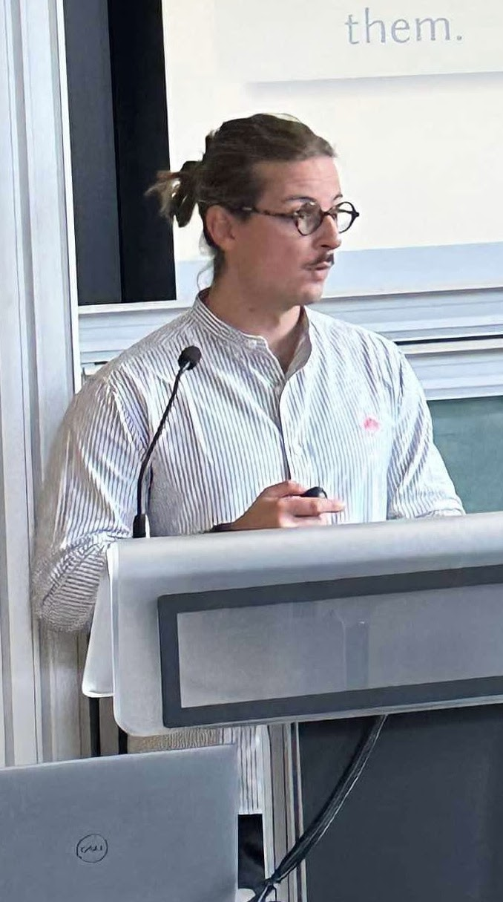

Félix Michelet
Post-doctoral researcher in economics, University of Cologne
I am a post-doctoral researcher in economics at the University of Cologne.
My research focuses on (1) the impact of renewable energy deployment on electricity markets and greenhouse gas emissions (2) the ex-post evaluation of energy and environmental policies such as market integration or carbon taxation, with a particular focus on distributional consequences. I apply modern microeconometric tools to evaluate these policies and provide insights for energy and environmental decision-making.
[E-Mail] [Google Scholar] [SSRN] [ORCID] [IDEAS/RePec] [CV]
News
- 2026 Spin City: Local Externalities of Wind Turbines has been published in Energy Economics (with Sven Heim and Mario Liebensteiner).
- 2026 New CESifo working paper: When Wind Blows Through the Backdoor: Revisiting IV Estimates of Household Elasticities under Real-Time Electricity Pricing During the Energy Crisis (with Henri Herrmann and Oliver Ruhnau).
- 2025 New working paper: How Fuel Switching Impacts the Environmental Value of Renewable Energy — revision requested at Economics of Energy and Environmental Policy.
- 2024 Job market paper awarded 2nd prize, FAERE Young Economist Award — The Impact of Electricity Market Integration on the Cost of CO₂ Emissions Abatement through Renewable Energy Promotion.
References
- Mar Reguant (ICREA – IAE-CSIC & Northwestern University) — mar.reguant@northwestern.edu
- Sven Heim (Mines Paris – PSL) — sven.heim@mines-paristech.fr
- Nicolas Astier (Paris School of Economics) — nicolas.astier@psemail.eu
- Matthieu Glachant (Mines Paris – PSL) — matthieu.glachant@minesparis.psl.eu